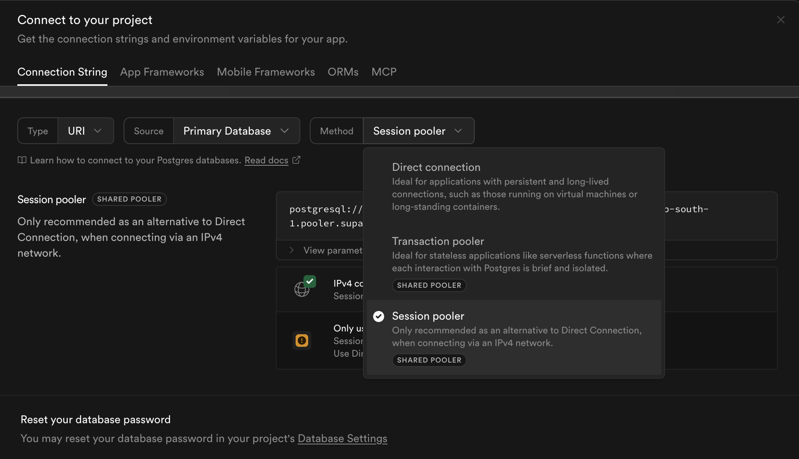
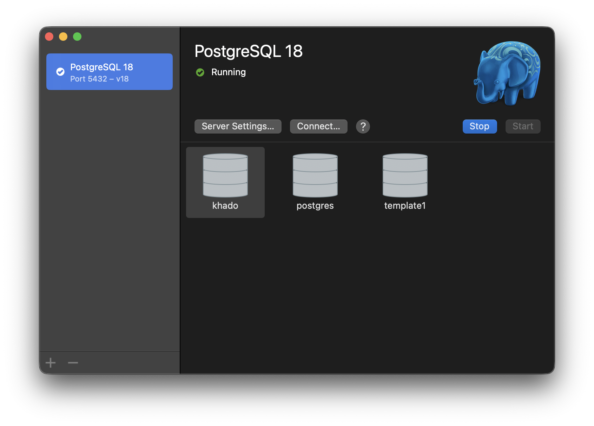
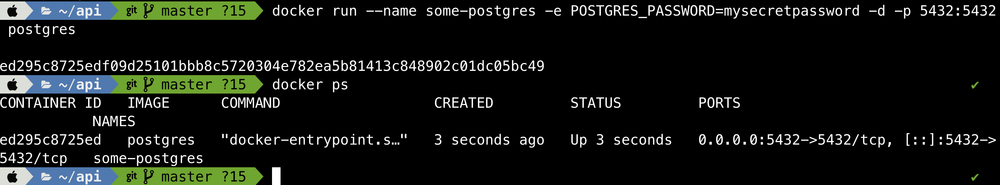

Web Application Development
CSC13008-23KTPM1
Note 07 - Misc
Lecturer: Đỗ Nguyên Kha
Semester 1/2025-2026 @ FIT-HCMUS
Content
- Supabase
- Postgres
- TablePlus
Supbase ipv6 issue
Supabase Postgres connections use IPv6 by default. If your network doesn't support IPv6, you may encounter connection issues. For IPv4-only networks, switch the connection to pooler mode. Remember to update both the username and host in your connection string accordingly.
Supbase ipv6 issue

Postgres
You can use free Postgres services from Supabase or Aiven , or self-host via the Postgres.app for Mac or Homebrew/Ports or other Windows or Docker for Desktop...
Postgres.app for Mac
 Notes: Default password is empty (no password)
Postgres in Docker
 Notes: Default password is mysecretpassword (or what you set in the ENV)
Colima
For commercial Docker use without a Docker Desktop license, consider Colima as a lightweight, open-source alternative.
TablePlus
TablePlus is a native GUI for databases like PostgreSQL, developed by a Vietnamese team and popular among developers and companies like Apple. The free tier limits users to 2 concurrent connections and 2 open tables, yet remains sufficient for everyday personal use. It supports PostgreSQL, MySQL, and SQLite with features like inline editing, syntax highlighting, and secure SSH/TLS connections.
TablePlus
 Notes: Use localhost or 127.0.0.1 to access local Postgres
Notes: Use localhost or 127.0.0.1 to access local Postgres